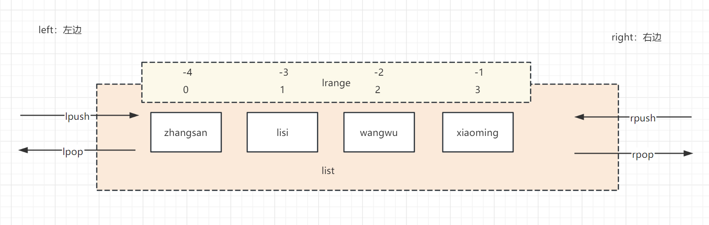
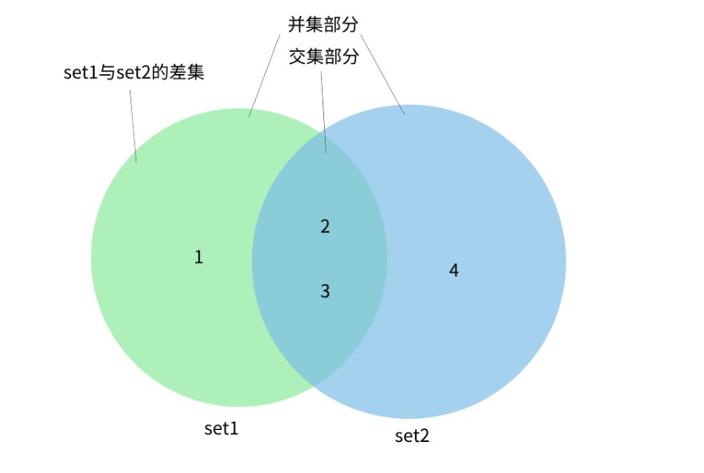

Go Redis：数据类型与事务
go-redis v9 所有命令都需要传 context
普通操作 context.Background()
需要超时控制 context.WithTimeout(ctx, 3*time.Second)
需要取消信号 context.WithCancel(ctx)
连接redis
1.使用docker + 命令行 :
docker exec -it redis bash
redis-cli -h 127.0.0.1 -p 6379
auth 20031213dmy
- 代码连接
Go复制代码
package main
import (
"fmt"
"github.com/go-redis/redis"
)
var DB *redis.Client
func Connect() error {
redisDB := redis.NewClient(&redis.Options{
Addr: "127.0.0.1:6379",
Password: "20031213dmy",
DB: 1,
})
ctx, cancel := context.WithTimeout(context.Background(), 3*time.Second)
defer cancel()
if err := redisDB.Ping(ctx).Err(); err != nil {
return err
}
DB = redisDB
return nil
}
func main() {
if err := Connect(); err != nil {
log.Fatalln(fmt.Errorf("connect redis failed, err:%v", err))
}
fmt.Println("connect redis success")
}
redis五大数据类型
面试必考题
- string (字符串)
- list (列表)
- set (集合)
- hash (哈希)
- zset (有序集合)
注意，redis中的数据都是在内存里面的，redis服务重启之后，数据也会被清空的
这几个我们先用命令行去操作一下
1. String
字符串 String 是 Redis 最简单的数据结构，可以存储字符串、整数或者浮点数。最常见的应用场景就是对象缓存
Bash复制代码
redis-cli
127.0.0.1:6379> auth redis # 登录
OK
127.0.0.1:6379> set name fengfeng # 设置
OK
127.0.0.1:6379> get name # 获取
"fengfeng"
127.0.0.1:6379> exists name # 判断这个key是否存在
(integer) 1
127.0.0.1:6379> exists name1
(integer) 0
127.0.0.1:6379> del name # 删除这个key
(integer) 1
127.0.0.1:6379> get name
(nil)
127.0.0.1:6379> GETSET name1 lisi # 如果不存在值，则返回 nil，set是会执行的
(nil)
127.0.0.1:6379> GETSET name1 lisi # 如果存在值，获取原来的值，并设置新的值
"lisi"
批量操作
Bash复制代码
127.0.0.1:6379> mset n1 zhangsan n2 lisi
OK
127.0.0.1:6379> get n1
"zhangsan"
127.0.0.1:6379> get n2
"lisi"
计数
自增1，自减1
使用 incr 可以直接创建key-values
Bash复制代码
127.0.0.1:6379> get n
(nil)
127.0.0.1:6379> incr n # 自增1
(integer) 1 # 当前这个n的值
127.0.0.1:6379> get n
"1"
127.0.0.1:6379> incr n
(integer) 2
127.0.0.1:6379> get n
"2"
127.0.0.1:6379> decr n # 自减1
(integer) 1
127.0.0.1:6379> get n
"1"
127.0.0.1:6379> decr n
(integer) 0
127.0.0.1:6379> get n
"0"
127.0.0.1:6379> decr n
(integer) -1
127.0.0.1:6379> get n
"-1"
使用 incrby key value 也可以直接创建 key-value ;
自增n，自减n
Bash复制代码
127.0.0.1:6379> get n
(nil)
127.0.0.1:6379>
127.0.0.1:6379> INCRBY n 10
(integer) 10
127.0.0.1:6379> INCRBY n 11
(integer) 21
127.0.0.1:6379> get n
"21"
127.0.0.1:6379> DECRBY n 5
(integer) 16
127.0.0.1:6379> get n
"16"
过期操作
这个过期 --> 创建 + 过期提示
setex 单位是秒
Bash复制代码
127.0.0.1:6379> setex name 20 fengfeng
OK
127.0.0.1:6379> get name
"fengfeng"
127.0.0.1:6379> ttl name # 查看还有多久过期
(integer) 12
127.0.0.1:6379> ttl name # -2表示已过期
(integer) -2
127.0.0.1:6379> get name
(nil)
expire
只能给已经创建成功的key添加上过期时间
设置一个key的过期时间
Bash复制代码
如果不设置过期时间，ttl显示的结果是-1表示永不过期
Bash复制代码
127.0.0.1:6379> set name fengfeng
OK
127.0.0.1:6379> ttl name # 现在是永不过期
(integer) -1
127.0.0.1:6379> expire name 10
(integer) 1
127.0.0.1:6379> ttl name
(integer) 6
127.0.0.1:6379> ttl name # 现在是过期了
(integer) -2
使用场景
- 登录
- 限流
- 计数器
中文乱码问题
但是输入中文仍然是乱码，无解
Bash复制代码
redis-cli --raw
127.0.0.1:6379> set name ﾷ￣ﾷ￣
OK
127.0.0.1:6379> get name
枫枫
2. List
redis的列表就相当于go里面的切片

Bash复制代码
使用 0 -1 可以直接全部打印 ; 可以实现正向查找 , 也可以实现负向查找;
rpush list zhangsan lisi wangwu xiaoming # 从右边向左边推入四个元素
4 # 返回列表的长度
127.0.0.1:6379> llen list # 查列表的长度
4
127.0.0.1:6379> lrange list 0 -1 # 查看列表的全部元素
zhangsan
lisi
wangwu
xiaoming
127.0.0.1:6379> rpop list # 从右边推一个元素出来
rpop list
xiaoming
127.0.0.1:6379> lrange list 0 -1
zhangsan
lisi
wangwu
127.0.0.1:6379> lpop list # 从左边推一个元素出来
zhangsan
127.0.0.1:6379> lrange list 0 -1
lisi
wangwu
使用场景
- 任务队列
- 排行榜
- 分页查询
3. Hash
相当于go里面的map，python中的字典
Bash复制代码
127.0.0.1:6379> hset dict name fengfeng # 设置一个hash key，并且给hash里面设置一组filed value
0
127.0.0.1:6379> hget dict name # 获取hash里面对应filed的值
fengfeng
127.0.0.1:6379> hgetall dict # 数据量大时，谨慎使用！获取在哈希表中指定 key 的所有字段和值
name
fengfeng
127.0.0.1:6379> hkeys dict # 获取在哈希表中指定 key 的所有filed
name
127.0.0.1:6379> hmset info name fengfeng age 23 # 批量设置
OK
127.0.0.1:6379> hkeys info
name
age
127.0.0.1:6379> HEXISTS info name # 判断某个key是否存在
1
127.0.0.1:6379> HEXISTS info name1
0
127.0.0.1:6379> HDEL info name # 删除hash中的一个filed
1
127.0.0.1:6379> hkeys info
age
127.0.0.1:6379> hlen info # 返回hash中filed的个数
1
注意，设置过期只能给hash的key设置过期，里面的键值对是不能单独再设置过期的
使用场景
- 记录网站某篇文章的浏览量
- 存储配置信息
4. Set
集合中的元素没有先后顺序
HashSet就是基于HashMap来实现的，HashSet，他其实就是说一个集合，里面的元素是无序的，他里面的元素不能重复的
Bash复制代码
127.0.0.1:6379> sadd set a b c d # 添加元素
4
127.0.0.1:6379> sadd set a b c e # 实际只有一个元素添加进去了
1
127.0.0.1:6379> scard set # 获取集合的长度
5
127.0.0.1:6379> sismember set a # 判断某个元素是不是在集合里面
1
127.0.0.1:6379> sismember set f
0
127.0.0.1:6379> smembers set # 获取集合中的数据 无序的
e
d
b
a
c
127.0.0.1:6379> srem set a # 删除集合中的某个元素 可传多个
1

交集、并集和差集
sdiff 差集
sinter 交集
sunion 并集
Bash复制代码
127.0.0.1:6379> sadd set1 1 2 3
3
127.0.0.1:6379> sadd set2 2 3 4
3
127.0.0.1:6379> sdiff set1 set2 # 差集
1
127.0.0.1:6379> sdiff set2 set1
4
127.0.0.1:6379> sinter set1 set2 # 交集
2
3
127.0.0.1:6379> sunion set1 set2 # 并集
1
2
3
4
随机抽奖
使用spop命令用于移除集合中的指定 key 的一个或多个随机元素，移除后会返回移除的元素
Bash复制代码
127.0.0.1:6379> sadd order 1 2 3 4 5 6 7 8
8
127.0.0.1:6379> spop order # 随机移除一个
5 # 随机的
127.0.0.1:6379> spop order
7
127.0.0.1:6379> spop order 3 # 随机移除3个 3.2版本才有效 redis-server -v 查看版本 或者
7
查看版本
两种方法
Bash复制代码
C:\Users\枫枫>redis-server -v
127.0.0.1:6379> info server
使用场景
- 共同好友
- 统计网站的独立ip
- 标签
5. sorted set
有序集合
sorted set 增加了一个权重参数 score，使得集合中的元素能够按 score 进行有序排列
可以实现按照分数权重实现存储 ;
查找的时候可以按照权重的区间实现查找, 支持反序查找结果 ; ,
可以i实现incery 实现固定值的加减
也是不能重复的
Bash复制代码
127.0.0.1:6379> zadd class 88 fengfeng 46 zhangsan 76 wangwu 36 lisi # 向有序集合添加一个或多个成员
(integer) 4
127.0.0.1:6379> zrange class 0 -1 # 通过索引，按照分数从低到高返回
1) "lisi"
2) "zhangsan"
3) "wangwu"
4) "fengfeng"
127.0.0.1:6379> zrevrange class 0 -1 # 通过索引，按照分数从高到低返回
1) "fengfeng"
2) "wangwu"
3) "zhangsan"
4) "lisi"
127.0.0.1:6379> zcard class # 获取有序集合的成员数
(integer) 4
127.0.0.1:6379> ZSCORE class zhangsan # 查看某个成员的分数
"46"
127.0.0.1:6379> ZRANK class wangwu # 查看成员的排名 从小到大排序
(integer) 2
127.0.0.1:6379> ZREVRANK class wangwu # 查看成员的排名 从大到小排序
(integer) 1
127.0.0.1:6379> zcount class 40 70 # 计算在有序集合中指定区间分数的成员数
(integer) 1
127.0.0.1:6379> zrangebyscore class 40 70 # 通过分数返回有序集合指定区间内的成员
1) "zhangsan"
127.0.0.1:6379> zrevrangebyscore class 100 0 # 返回有序集中指定分数区间内的成员，分数从高到低排序
1) "fengfeng"
2) "wangwu"
3) "zhangsan"
4) "lisi"
127.0.0.1:6379> zrange class 0 -1 withscores # 把成员和分数一起显示出来
1) "lisi"
2) "36"
3) "zhangsan"
4) "46"
5) "wangwu"
6) "76"
7) "fengfeng"
8) "88"
127.0.0.1:6379> zrem class fengfeng # 移除一个成员
(integer) 1
127.0.0.1:6379> zrange class 0 -1
1) "lisi"
2) "zhangsan"
3) "wangwu"
127.0.0.1:6379> ZREMRANGEBYRANK class 0 0 # 移除有序集合中给定的排名区间的所有成员(第一名是0)(低到高排序) 现在是把lisi移除了
(integer) 1
127.0.0.1:6379> zrange class 0 -1
1) "zhangsan"
2) "wangwu"
127.0.0.1:6379> ZREMRANGEBYSCORE class 40 50 # 移除有序集合中给定的分数区间的所有成员
(integer) 1
127.0.0.1:6379> zrange class 0 -1
1) "wangwu"
127.0.0.1:6379> ZSCORE class wangwu
"76"
127.0.0.1:6379> ZINCRBY class 2 wangwu # 给王五+2
"78"
127.0.0.1:6379> ZINCRBY class -2 wangwu # 给王五-2
"76"
127.0.0.1:6379> ZSCORE class wangwu
"76"
使用场景
- 排行榜
- 订单支付超时（下单时插入，member为订单号，score为订单超时时间戳，然后写个定时任务每隔一段时间执行zrange）
通过go操作五大数据类型
前面会了命令之后，使用go去操作redis
你会发现和命令的使用方式一模一样
String
Go复制代码
var DB *redis.Client
func RedisString() {
DB.Set("name", "枫枫", 0) // 0 就是永不过期
stringCmd := DB.Get("name")
fmt.Println(stringCmd.Val()) // 枫枫
fmt.Println(stringCmd.Result()) // 枫枫 nil
fmt.Println(DB.Exists("name").Val()) // 1
fmt.Println(DB.Exists("name1").Val()) // 0
DB.Set("age", 12, 0)
DB.Incr("age") // 自增1
DB.IncrBy("age", 10) // 自增10
fmt.Println(DB.Get("age").Int64()) // 23
fmt.Println(DB.TTL("name").Val()) // -1s
DB.Expire("name", 2*time.Second) // 设置2秒的过期时间
fmt.Println(DB.TTL("name").Val()) // 2s
time.Sleep(2 * time.Second)
fmt.Println(DB.TTL("name").Val()) // -2s
}
List
Go复制代码
func RedisList() {
DB.RPush("list", "zhangsan", "lisi", "wangwu", "xiaoming")
fmt.Println(DB.LLen("list").Val()) // 4
fmt.Println(DB.LRange("list", 0, -1).Val()) // [zhangsan lisi wangwu xiaoming]
}
Hash
Go复制代码
func RedisHash() {
DB.HSet("info", "文章1", 23)
fmt.Println(DB.HGet("info", "文章1").Int64()) // 23
fmt.Println(DB.HGetAll("info").Val()) // map[文章1:23]
fmt.Println(DB.HKeys("info").Val()) // [文章1]
fmt.Println(DB.HExists("info", "文章1").Val()) // true
fmt.Println(DB.HExists("info", "文章2").Val()) // false
fmt.Println(DB.HLen("info").Val()) // 1
}
Set
Go复制代码
func RedisSet() {
DB.SAdd("set", "a", "b", "c", "d")
fmt.Println(DB.SIsMember("set", "a").Val()) // true
fmt.Println(DB.SMembers("set").Val()) //[b d c a] 无序的
DB.SAdd("set1", 1, 2, 3)
DB.SAdd("set2", 2, 3, 4)
fmt.Println(DB.SDiff("set1", "set2").Val()) // 差集
fmt.Println(DB.SInter("set1", "set2").Val()) // 交集
fmt.Println(DB.SUnion("set1", "set2").Val()) // 并集
}
Zset
Go复制代码
func RedisZset() {
DB.ZAdd("class", redis.Z{Score: 80, Member: "张三"}, redis.Z{Score: 46, Member: "李四"})
fmt.Println(DB.ZRange("class", 0, -1).Val()) // [李四 张三]
fmt.Println(DB.ZRevRange("class", 0, -1).Val()) // [张三 李四]
fmt.Println(DB.ZRangeArgs(context.Background(), redis.ZRangeArgs{
Key: "class",
Start: 80,
Stop: 99,
ByScore: true,
//根据是否需要实现反转;
Rev : true ,
}).Val()) // 46
}
redis常用命令
这都是一些很常用的一些命令
Bash复制代码
127.0.0.1:6379> select 2 # 切数据库
OK
127.0.0.1:6379[2]> select 0
OK
127.0.0.1:6379> keys * # 查看所有的key
1) "zset"
2) "order"
127.0.0.1:6379> keys s* # 查看s开头的key
1) "set"
2) "set2"
3) "set1"
127.0.0.1:6379> ping # 查看服务是否运行
PONG
127.0.0.1:6379> move name 1 # 将当前数据库的key移动到数据库1当中
(integer) 1
127.0.0.1:6379[1]> PERSIST name # 移除key的过期时间，key永不过期
(integer) 1
127.0.0.1:6379[1]> type name # 查看key的数据类型
string
127.0.0.1:6379[1]> type info
hash
127.0.0.1:6379[1]> type class
zset
127.0.0.1:6379[1]> type set
set
127.0.0.1:6379[1]> type list
list
127.0.0.1:6379[1]> CLIENT LIST # 获取连接到服务器的客户端连接列表
id=3 addr=127.0.0.1:52216 fd=8 name= age=386 idle=0 flags=N db=1 sub=0 psub=0 multi=-1 qbuf=0 qbuf-free=32768 obl=0 oll=0 omem=0 events=r cmd=client
id=4 addr=127.0.0.1:52377 fd=7 name= age=5 idle=3 flags=N db=0 sub=0 psub=0 multi=-1 qbuf=0 qbuf-free=0 obl=0 oll=0 omem=0 events=r cmd=client
127.0.0.1:6379[1]> dbsize # 获取当前数据库key的数量
(integer) 5
127.0.0.1:6379[1]> FLUSHDB # 删除当前数据库的所有key
OK
127.0.0.1:6379[1]> FLUSHALL # 删除全部数据库的所有key
OK
事务
Redis 事务的本质是一组命令的集合。事务支持一次执行多个命令，一个事务中所有命令都会被序列化。在事务执行过程，会按照顺序串行化执行队列中的命令，其他客户端提交的命令请求不会插入到事务执行命令序列中。
因为我们的程序是并发的，你在一个程序里面设置值，然后取值，这很正常
但是如果并发存在，那么肯定就会存在，取值的时候不是我自己设置的那个值
基于上面的问题，那我在一个客户端操作的时候，把所有的指令一次性按照顺序排他的放在一个队列中，执行完了之后再让其他的客户端操作
Bash复制代码
127.0.0.1:6379> multi # 开启事务
OK
127.0.0.1:6379> set name ff
QUEUED
127.0.0.1:6379> get name
QUEUED
127.0.0.1:6379> exec # 执行事务
1) OK
2) "ff"
取消事务
Bash复制代码
127.0.0.1:6379> MULTI
OK
127.0.0.1:6379>
127.0.0.1:6379> set age 12
QUEUED
127.0.0.1:6379> discard # 取消事务
OK
127.0.0.1:6379> get age # 数据未改动
(nil)
如果在事务过程中，存在命令性错误，则执行exec的时候，所有命令都不会执行
Bash复制代码
127.0.0.1:6379> MULTI
OK
127.0.0.1:6379> set age 12
QUEUED
127.0.0.1:6379> x
(error) ERR unknown command 'x'
127.0.0.1:6379> get age
QUEUED
127.0.0.1:6379> exec
(error) EXECABORT Transaction discarded because of previous errors.
go处理redis事务
和命令操作稍微有点不太一样
现代中go_redis中的事务操作实现了自动exec()自动提交 更改 :
- Pipeline：管道，把多个命令打包一起发，减少网络开销，每个命令立即执行
- TxPipeline：事务，用 MULTI/EXEC 包裹，命令先入队，统一执行，支持回滚
需要区分的一点是 : 现代go开发中多数情况下使用的是管道实现的操作, 追求的是性能最高 ; 只有安全系数相当高的地方才会考虑使用事务 ;
管道（Pipelined）用得多，大多数场景不需要严格事务。
- 管道：批量操作、缓存预热、日志收集，追求性能
- 事务（TxPipelined）：金融扣款、库存扣减、秒杀，需要原子性
现代后端开发中，管道占比更大，事务只在关键业务用。因为：
1. 分布式事务性能开销大
2. 很多场景可以用幂等、重试替代
3. Redis本身是内存库，性能优先
// 基础事务 - MULTI/EXEC
func BasicTx() error {
tx := DB.TxMulti(ctx)
defer tx.Close()
tx.Set(ctx, "user:1:name", "枫枫", 0)
tx.Set(ctx, "user:1:age", 25, 0)
tx.HSet(ctx, "user:1:info", "city", "北京")
_, err := tx.Exec(ctx)
return err
}
Go复制代码
// WATCH 乐观锁事务
func WatchTx(key string, delta int64) error {
for {
err := DB.Watch(ctx, func(tx *redis.Tx) error {
val, err := tx.Get(ctx, key).Int64()
if err != nil && err != redis.Nil {
return err
}
// 这里用 TxPipelined 而不是 Pipelined
_, err = tx.TxPipelined(ctx, func(pipe redis.Pipeliner) error {
pipe.Set(ctx, key, val+delta, 0)
return nil
})
return err
}, key)
if err == redis.TxFailedErr {
continue
}
return err
}
}
锁(乐观的)
多个客户端有可能同时操作同一组数据，并且该数据一旦被操作修改后，将不会继续操作
监测到别人修改数据 : 会自动放弃当前的 事务内部的操作, 防止数据被脏 ;
在操作之前锁定要操作的数据，一旦发生变化，终止当前操作
Go复制代码
127.0.0.1:6379[1]> set price 100
OK
127.0.0.1:6379[1]> WATCH price // 检测这个key，如果key在事务期间发生了变化，则事务不成功
OK
127.0.0.1:6379[1]> MULTI
OK
127.0.0.1:6379[1]> set price 101
QUEUED
127.0.0.1:6379[1]> get price
QUEUED
127.0.0.1:6379[1]> exec // 在exec之前，再用一个客户端去修改这个price的值
(nil)
127.0.0.1:6379[1]> get price
"1"
go处理redis锁
Go复制代码
func RedisWatch() {
DB.Watch(context.Background(), func(tx *redis.Tx) error {
_, err := tx.Pipelined(context.Background() , func(pipe redis.Pipeliner) error {
pipe.Set( context.Background(), "price", 100, 0)
return nil
})
if err != nil {
log.Println(err)
return err
}
fmt.Println(tx.Get(context.Background(), "price").Int())
return nil
}, "price")
}
持久化
Redis是一个内存数据库，数据保存在内存中，但是我们都知道内存的数据变化是很快的，也容易发生丢失
辛好Redis还为我们提供了持久化的机制，分别是RDB(Redis DataBase)和AOF(Append Only File)。
RDB，简而言之，就是在不同的时间点，将redis存储的数据生成快照并存储到磁盘等介质上；
AOF，则是换了一个角度来实现持久化，那就是将redis执行过的所有写指令记录下来，在下次redis重新启动时，只要把这些写指令从前到后再重复执行一遍，就可以实现数据恢复了。
redis数据存磁盘的过程：
- 客户端向服务端发送写操作(数据在客户端的内存中)。
- 数据库服务端接收到写请求的数据(数据在服务端的内存中)。
- 服务端调用write这个系统调用，将数据往磁盘上写(数据在系统内存的缓冲区中)。
- 操作系统将缓冲区中的数据转移到磁盘控制器上(数据在磁盘缓存中)。
- 磁盘控制器将数据写到磁盘的物理介质中(数据真正落到磁盘上)。
RDB持久化
默认是开启的，默认的存储文件是 dump.rdb
可以修改这个文件的名称
Go复制代码
dbfilename dump.rdb
dir ./
触发rdb备份
- 配置自动备份
默认是 一分钟内修改了一万次，5分钟内修改了10次，30分钟内修改了1次
Go复制代码
save 3600 1
save 300 100
save 60 10000
- 手动命令备份
save：save时只管保存，其他不管，全部阻塞，手动保存，不建议使用。
bgsave：redis会在后台异步进行快照操作，快照同时还可以响应客户端情况。
可以使用lastsave命令获取最后一次成功生成快照的时间（时间戳）
AOF持久化
AOF默认是关闭的，需要手动开启的。开启方式：修改redis.conf配置文件来开启AOF
如果是phpstudy的话，要改redis目录的conf文件，改软件里面的那个配置文件每次重启都没有了
这是我的目录，D:\client\phpstudy\phpstudy_pro\Extensions\redis3.0.504
重启之后，在这个目录下就有一个 appendonly.aof文件
Go复制代码
appendonly yes
appendfilename "appendonly.aof"
appendfsync always
dir ./
appendfsync always：每次写入立即同步
appendfsync everysec：每秒同步
appendfsync no：不主动同步
参考文档
go-redis: https://github.com/redis/go-redis
redis事务： https://blog.csdn.net/weixin_45080272/article/details/129715920
常用命令：https://baijiahao.baidu.com/s?id=1678695492251756487&wfr=spider&for=pc
go连接redis：https://zhuanlan.zhihu.com/p/645669818
zset: https://blog.csdn.net/weixin_46377355/article/details/116407373
五大数据类型： http://www.taodudu.cc/news/show-6290486.html?action=onClick
go处理redis事务：https://www.php.cn/faq/585769.html
go处理redis锁：https://blog.csdn.net/weixin_44706011/article/details/106910913
redis持久化： https://baijiahao.baidu.com/s?id=1708708550003841683&wfr=spider&for=pc
redis持久化：https://blog.csdn.net/JAVAMysql111/article/details/123171055
redis开启AOF持久化：https://baijiahao.baidu.com/s?id=1763858330943737708&wfr=spider&for=pc
redis开启AOF持久化：https://blog.csdn.net/lili40342/article/details/127938233
redisPDB持久化： https://blog.csdn.net/weixin_43888891/article/details/131031003